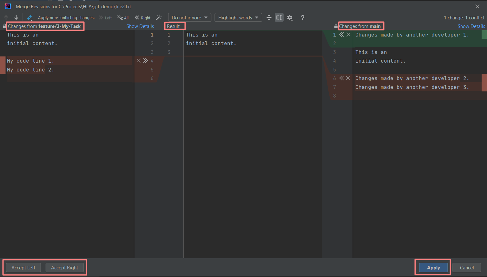
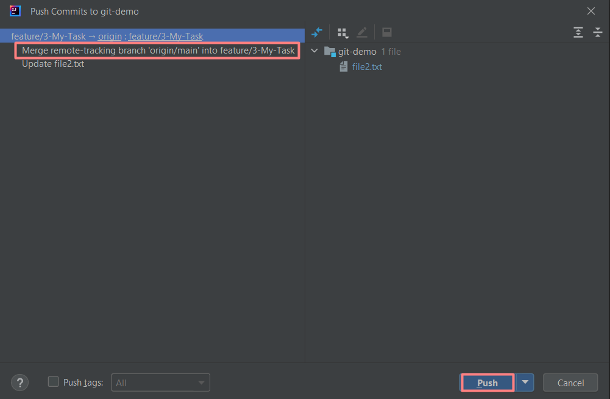

GIT FLOW IN INTELLIJ IDEA
Create and Clone Repository
Create Issue and Branch
Write Code
Imitate Changes Made by Another Developer
Commit Changes
Create Pull Request and Observe Merge
Conflict
Merge Updates from Main Branch to Your Feature Branch.
Resolve Merge Conflict
Create New Pull Request
Finish Work in Intellij IDEA
CREATE AND CLONE REPOSITORY
Create an empty GitHub repository “git-demo” with a demo file “file2.txt”:
This is an
initial content.
Clone your repository to your local machine and open the repository in Intellij IDEA.
Ensure that “main” branch is selected (at bottom right corner).
Get updates from the “main” branch by Git > Update Project (similar to a circle with arrows in VS Code).
Now, “main” branch is updated, we can see “file2.txt”.
Outline
CREATE ISSUE AND BRANCH
Assume there is an issue to work on. Go to the “Issues” tab to create a new issue: “My Task”.

In this case the issue has a new number #3. Next, create a new local branch “feature/3-My-Task”. Press on the “main” branch in the bottom right corner and select “origin/main” > New Branch from ‘origin/main’.

Type your branch name and press Create.
In the bottom right corner you will see that you are on your new branch.
Outline
WRITE CODE
Write your code.
Outline
IMITATE CHANGES MADE BY ANOTHER DEVELOPER
Assume that another developer worked on their branch and pushed changes to the “main” branch. Let’s imitate this situation. Go to the GitHub repository and edit “file2.txt” directly in the “main” branch.
Outline
COMMIT CHANGES
Note, that your code was written on lines 4 and 5. And now these lines are occupied by another code (what is known as a “Git conflict”). Return back to Intellij IDEA. Assume you don’t know about these changes. Simply commit your new branch with your changes.
Outline
CREATE PULL REQUEST AND OBSERVE MERGE CONFLICT
Go to the GitHub repository, you will see a popup “Compare & pull request”.
There is a message that GitHub “Can’t automatically merge” our “feature/3-My-Task” branch into the “main” branch.
The reason behind this is that you created your branch from a “main” branch state, which is not relevant any more (now it is in the “past”, since another developer updated “main” branch). To resolve this, it's required firstly to update “feature/3-My-Task” branch, and after this push our commits. When another developer was working on their task, perhaps they didn’t know about our work on our branch. And that’s why new code from the “main” branch may affect the same files and lines of code that we worked on. Synchronization of these changes is known as “Git conflict resolving”.
OutlineMERGE UPDATES FROM MAIN BRANCH TO YOUR FEATURE BRANCH.
RESOLVE MERGE CONFLICT
Return back to Intellij IDEA. Checkout to the “origin/main” branch (in the bottom left corner).
There is an initial state of the “main” branch.
Get updates from the “main” branch by Git > Update Project (similar to a circle with arrows in VS Code).
Now, we have an updated state of the “main” branch including changes made by another developer.
However, there is still no connection between these updates and our branch “feature/3-My-Task”. To fix this we need to merge the “origin/main” branch to “feature/3-My-Task”. Checkout to “origin/feature/3-My-Task”.
Then, go to Git > Merge.
And select a branch to merge from. A branch to merge from is “origin/main” (it will be merged with its updates into “feature/3-My-Task”).
As we expected, there is a Git merge conflict.
Double click on “file2.txt” to open a merge resolution window. There are three columns: (1) our code, (2) final result of our code, and (3) updates from the “main” branch. Similar to VS Code, there are “Accept Left”, “Accept Right”, and “Apply” buttons.
Let’s use helpers to accept all changes from the “main” branch.
Similarly, let’s use helpers to accept all changes from our code.
However, it might be not what we want. So, we can type what we need in the Result section directly.
Click on an “Apply” button. Git conflict is resolved. Now we can commit our code (including changes merged from the “main” branch). In contrast to VS Code, Intellij IDEA doesn’t show changes to commit and push in this situation.

Open a “Git” and select a “Push” option.
Click the “Push” button.
Outline
CREATE NEW PULL REQUEST
Return back to a GitHub repository. Click “Compare & pull request”.
Now, we can see that GitHub is able to merge the “feature/3-My-Task” branch into the “main” branch.
Click “Create pull request”. Then “Merge pull request” or “Squash and merge” (if you don’t know what to choose, then choose “Merge pull request”).

Now, “file2.txt” in the “main” branch looks exactly as we defined during merge conflict resolution.
Outline
FINISH WORK IN INTELLIJ IDEA
Return back to Intellij IDEA. Ensure that you are on your “feature/3-My-Task” branch. Since your work is completed, checkout to the “origin/main” branch.

As we can see, “file2.txt” has code before merging.

Get updates from the “main” branch by Git > Update Project (similar to a circle with arrows in VS Code).
Now, we have a current state of the “main” branch on our local machine.
Outline